Pet Filament Makinası
PET şişelerden 3D Yazıcı için PET filament yapımı.
,
Projenin Github bağlantısı için;
https://github.com/mrtcnblgcc/Pet-Filament-Machine-by-mrtcnblgc
Parça Listesi:
Elektronik;
- 220V AC - 12V DC/5A güç kaynağı.
- Arduino Pro Mini (5V, 16 Mhz).
- A4988 Step Motor Sürücüsü.
- SSD1306 OLED Ekran.
- 12V Isıtıcı fişek.
- IRFZ44N Mosfet.
- 100k Ohm Termistör.
- LM317T Voltaj Regülatörü.
- Açma-kapama anahtarı.
- Kondansatörler (2x4.7uF, 1x100nF).
- Dirençler (1x100r, 1x330r, 5x10k, 1x1k, 1x4.7k).
- 2.54mm Erkek ve Dişi Konnektörler.
Mekanik;
- 3D yazıcıdan çıkartılmış parçalar. Dişli seti için ecodecat3d'nin STL dosyalarını kullandım. Sitesini ziyaret edebilirsiniz; ( https://sites.google.com/view/makeyourownecopet/inicio ).
- Dişli takımı için 4x 608zz model rulman.
- Bazı ölçülerde vida ve somunlar.
- 3D Yazıcı ekstruder seti. (Isıtma bloğu ve nozzle) Nozzle’ı 1,75mm'ye kadar genişletmeniz gerekiyor.
- Ekstruder'i tutmak için L şeklinde metal raf tutucu.
- 3D yazıcıdan çıkartılmış şişe kesici. Ben bunu kullandım; ( https://www.thingiverse.com/thing:5442876 ).
- Zemin için uygun tahta parçaları.
Kurulum
Mekanik;
Dişli kutusu ve ısıtıcı bloğunu yerleştireceğiniz tahta veya benzeri bir taban gerekir. Öncelikle dişli kutusunu basıp tahtaya monteleyin sonra step motoru dişli kutusuna bağlayın. Daha sonra ısıtıcı bloğu dişli kutusuyla aynı hizaya yerleştirin. Ben güç kaynağını kullandığım tahta zeminin arkasına yerleştirdim. İsterseniz bağımsız bir yere yerleştirebilirsiniz. Pet şişeleri kesmek için kullanacağımız parçayı da benim yaptığım gibi bu ahşap tabana yerleştirebilirsiniz
1.1) Dişli kutusu ve ısıtıcı bloğun yerleştirilmesi.
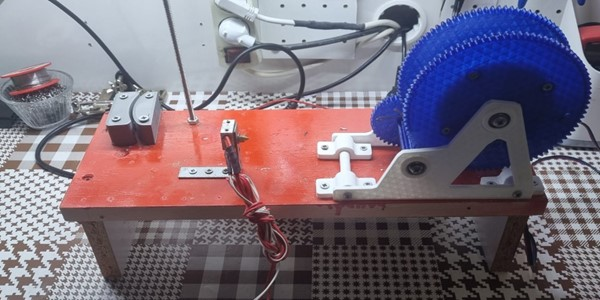
1.2) Güç kaynağını ve PET şişeleri kesmek için kullanacağımız parçayı yerleştirme.
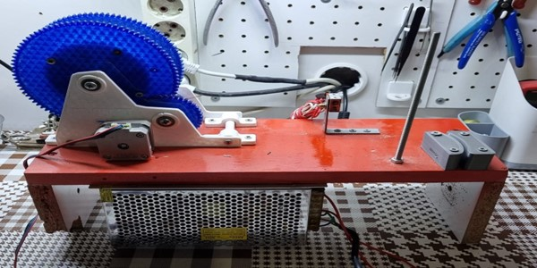
Bütün mekanik montajlar bunlar.
Elektronik;
Elektronik kartı delikli plaket üzerine yerleştirdim. Ancak, PCB’de üretilebilir. Devre şeması aşağıdaki gibidir:
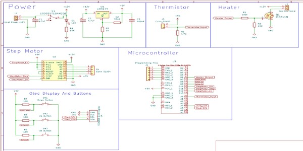
Delikli plaket üzerinde devrenin oluşturulması;
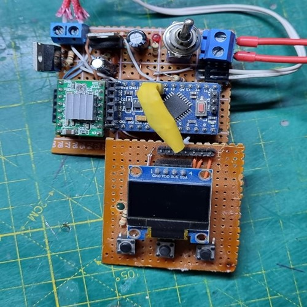
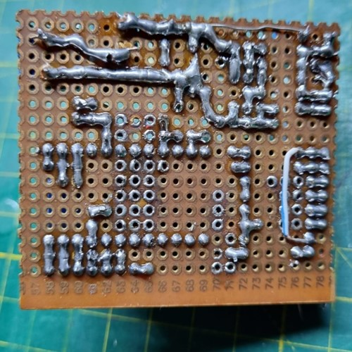
OLED ekran üzerindeki başlangıç ve ana menü görünümü;
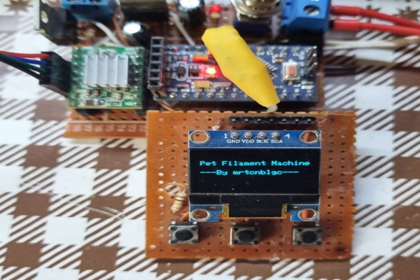
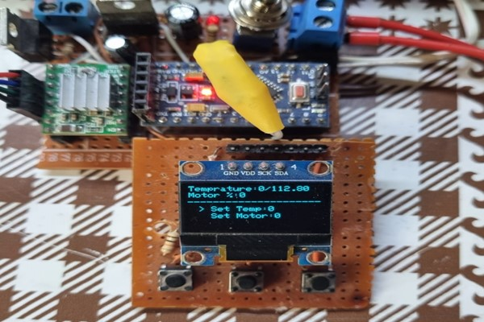
Sağdaki buton "OK" tuşudur. Soldaki buton "DOWN" tuşudur ve ortadaki buton "UP" tuşudur.
Isıtıcıyı istediğiniz değerde çalıştırmak için ">" sembolü "Set Temp" üzerindeyken "OK" tuşuna bir kez basın. Ekranda hiçbir değişiklik olmayacak. Ancak "UP" tuşuna bastığınızda değer onar onar artacaktır. Aynı şekilde azaltmak istediğinizde "DOWN" tuşuna basın. Değer onar onar azalacaktır. İstediğiniz değere ulaştığınızda "OK" tuşuna bastığınızda ana menüye geri döneceksiniz.
Step motorunu çalıştırmak ve hızını ayarlamak için de aynısını yapmalısınız. Menüde "Set Temp" ve "Set Motor" arasında gezinmek için "UP" ve "DOWN" düğmelerine basmalısınız.
Üretim
Eğer mekanik ve elektronik aksamlarınız tamamsa PET'ten filament yapma sürecine hazırsınız demektir, tebrikler! :)
Öncelikle şişenin üst ve alt tarafını kesmeniz gerekiyor. Bundan sonra, şişeyi şişe dilimleyiciye yerleştirebilmek için şişenin ucuna küçük bir kıymık şeklinde bir kesim yapmanız gerekecek.
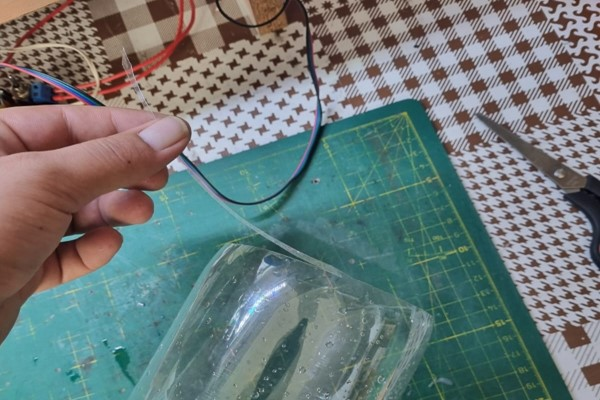
Ardından kıymık şeklinde kesilen küçük parçayı dilimleyicinin içinden geçirin;
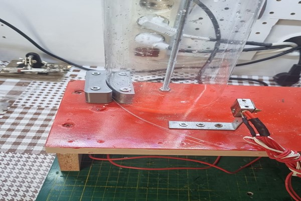
Geçirdiğiniz kısımdan çekerek şerit halinde kesilmesini sağlayın.
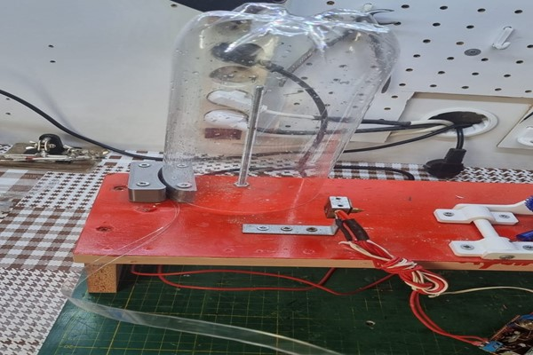
Ve sonuç;
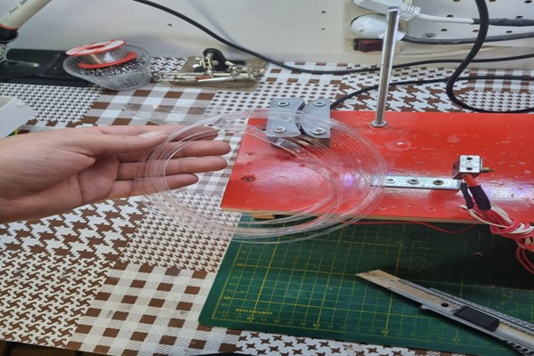
Şimdi şişeyi dilimledikten sonra dilimlediğimiz pet şişeyi ince bir şekilde bir daha kesiyoruz. Daha sonra ısıtıcı blok soğukken ısıtıcıdan geçiriyoruz.
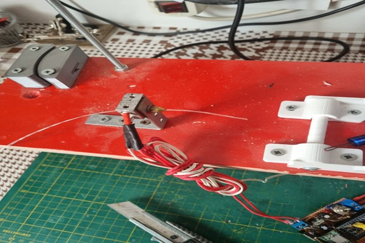
Geçtikten sonra ısıtıcıyı 180°C ile 200°C arasında ısıtıyoruz. Isıtıcı istenilen sıcaklığa ulaştığında boru benzeri bir cisimle çıkan filamenti dişliye bağlı iple sıkıştırıyoruz. Bu işlemden sonra motoru çalıştırıp sarmasını sağlıyoruz.
Ve işte filamentimiz;
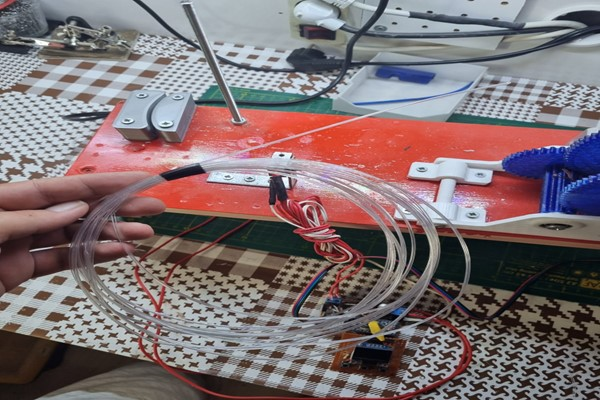